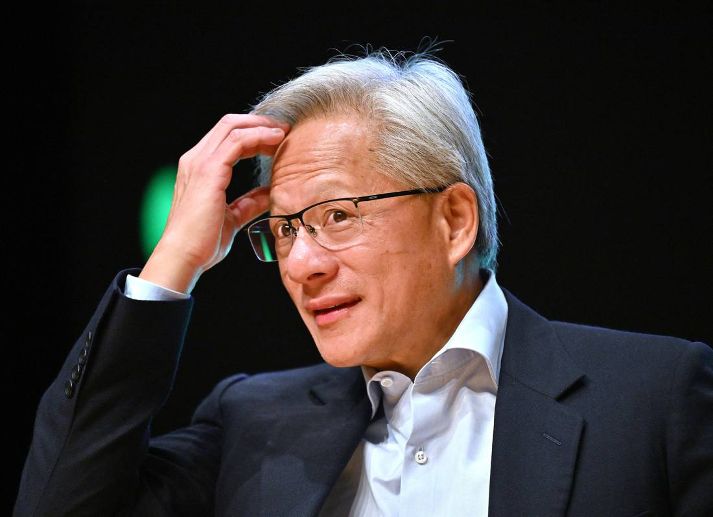

Kress Raises Nvidia's Fiscal 2028 Growth Outlook to 75% as CPU Revenue Set to More Than Double
Interim chief executive Colette Kress raised Nvidia's fiscal 2028 revenue growth outlook to approximately 75 percent year over year, up from 70 percent, on the November 17, 2026 earnings call, and said total CPU revenue will more than double in fiscal 2028 as agentic AI drives extraordinary demand for CPUs. The raise came hours after Nvidia reported $115.8 billion in third-quarter revenue and a $130 billion fourth-quarter guide.

- 01THE RAISE — Interim chief executive Colette Kress told analysts on the November 17 earnings call that Nvidia now expects fiscal 2028 revenue to grow approximately 75 percent year over year, up from the approximately 70 percent guided in August, off a higher fiscal 2027 base.
- 02THE REASON — Kress said the higher figure reflects both demand that keeps growing and additional supply the company can now provide, and that the outlook accounts for data center readiness, the durability of end-customer demand, and customers' access to capital.
- 03THE SECOND ENGINE — Agentic AI is driving extraordinary demand for CPUs, far outstripping supply; total CPU revenue is projected to more than double in fiscal 2028, with CoreWeave, Meta and OpenAI adopting Vera CPUs during the quarter.
WHAT HAPPENEDWhat Happened
Interim chief executive Colette Kress used Nvidia's first earnings call without Jensen Huang to raise the company's fiscal 2028 revenue growth outlook to approximately 75 percent year over year, up from the approximately 70 percent she had guided in August. "We expect revenue to grow approximately 75% year over year, up from 70% and off what is now a higher fiscal 2027 base," Kress told analysts on the November 17, 2026 call, hours after the company reported third-quarter revenue of $115.8 billion and a fourth-quarter guide of $130 billion.
The raise matters because the old 70 percent figure was already the most aggressive forward guidance Nvidia had ever given. In August, Huang said the company had never guided a full year in advance, and that demand was running well above 70 percent while supply allowed it to confidently deliver 70 percent. Kress said the higher figure reflects both demand that keeps growing and additional supply the company can now provide, and that the outlook accounts for data center readiness, the durability of end-customer demand, and customers' access to capital.
Kress also put a number on the CPU side of the business for the first time. Agentic AI is driving "extraordinary demand for CPUs, far outstripping supply," she said, and total CPU revenue is projected to more than double in fiscal 2028. New customers including CoreWeave, Meta and OpenAI adopted Vera CPUs during the quarter. Frontier labs are expected to contribute about 14 percent of data center revenue, and Kress said Nvidia's Nemotron open model is now the most widely used open model on OpenRouter.
The call's guidance came with a reminder that the quarter's beat does not settle the governance questions. The Wall Street Journal reported on Tuesday that the Securities and Exchange Commission is investigating Nvidia over whether it violated investor disclosure laws, and the board took no questions on Huang's resignation or the ongoing investigation. Shares seesawed during the call and traded about 3 percent higher while Kress was speaking, after initially rising about 2 percent in after-hours trading on the results.
WHY IT MATTERSA raise, not a reaffirmation
Kress did not merely hold the August framework. She raised it, on a higher base, on her first call as interim chief executive, and she did it hours after the board ruled out Huang's return. That is a deliberate show of strength from a management team that knows the market's question is no longer whether demand exists but whether this team can run the company without its founder. A 75 percent guide, off a fiscal 2027 base that itself beat expectations by about $7 billion, is the strongest answer available in numbers.
The figure is still supply-constrained, not demand-constrained. Kress was explicit that the outlook reflects the additional supply Nvidia can provide, and that demand continues to run ahead of it. That framing cuts both ways: it explains why the guide can keep rising, and it means the binding constraint on fiscal 2028 is execution and supply, not the order book.
WHAT TO WATCHCPUs become a second engine
Watch the CPU number. A doubling of CPU revenue in fiscal 2028 would make Vera a material second engine next to the GPU business, and it is the clearest sign yet that agentic AI is changing what customers buy from Nvidia, not just how much they buy. CoreWeave, Meta and OpenAI adopting Vera CPUs in the same quarter is the early evidence; the next guide is where the doubling gets tested.
Watch the two clocks that now run alongside the guidance. The SEC examination reported by the Wall Street Journal and Treasury Secretary Scott Bessent's roughly 10-day window for answers from the board both run to about November 25, and Huang is due before lawmakers on December 1 in the House and December 3 in the Senate Banking Committee. The guidance gives the stock a growth story to trade on; the governance questions are what could still interrupt it.
SIGNAL JUDGMENT — ANALYSISThe guidance is the interim team's strongest answer; the governance clock still runs
Tokenta Signal's judgment: Kress did not merely hold the August framework, she raised it, on a higher base, on her first call as interim chief executive, hours after the board ruled out Huang's return. That is a deliberate show of strength, and the numbers back it: a 75 percent guide off a fiscal 2027 base that beat expectations by about $7 billion, plus a CPU business set to more than double. The figure is still supply-constrained, which means the binding test for fiscal 2028 is execution, not demand. The guidance gives the stock a growth story to trade on, but it does not settle the governance questions: the SEC examination and Bessent's answer window both run to about November 25, and Huang faces lawmakers in December. The next guide is where the 75 percent gets tested, and the next chief executive is where the discount gets priced.
WHAT REMAINS UNCERTAINWhat Remains Uncertain
EVIDENCEEvidence
Interim chief executive Colette Kress told analysts on the November 17, 2026 earnings call that Nvidia now expects fiscal 2028 revenue to grow approximately 75 percent year over year, up from 70 percent, and that total CPU revenue will more than double in fiscal 2028.
PRIMARY SOURCESPrimary Sources
- New York Post: Nvidia reports $130B in earnings as chip giant exceeds Q4 expectations despite Jensen Huang scandal
https://nypost.com/2026/11/17/business/nvidia-reports-strong-earnings-as-embattled-ai-giant-reels-from-jensen-huang-scandal/ - ZeroHedge: Nvidia Surges After Blowout Q3 Earnings, Stellar Guidance, Says Won't Reinstate Huang, Boosts 2028 Revenue Growth To 75%
https://www.zerohedge.com/markets/nvidia-surges-after-blowout-q3-earnings-stellar-guidance-earnings-call-looms - MarketWatch: Nvidia expects CPU revenue to more than double next year
https://www.marketwatch.com/livecoverage/nvidia-earnings-stock-nvidia-jensen-huang-results-call/card/nvidia-expects-cpu-revenue-to-more-than-double-next-year-3n1VCELzeKoRoMChc9Dy